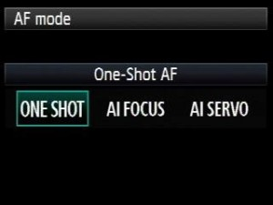

Fotografía deportiva
Tiene el fin de fotografiar el acto del deporte en cuestión, no sólo durante sino el antes también, como si fuera backstage, poner la cámara en manual y el enfoque automático, cuando tenemos la cámara en manual tenemos tres opciones

- One shot
cuando el fotografo está quieto y el modelo está quierto
- AI Focus
Cuando el fotografo no se mueve o sólo se mueve en su eje
- AI servus
Cuando el fotografo se va a mover y el modelo se puede mover.
Del deporte que vamos a fotografíar se debe averiguar en qué consiste, porque la escencia de la fotografía está en mostrar de qué va a ese deporte, y poder fotografía las acciones pico
Variaciones
- Fotografía deportiva artistica
- Fotografía publicitaria
- Backstage deportivo (lo que sucede antes y después del deporte)
- Las instalaciones
- Fotodeporitiva documental
- Panning : 1/40 - 1/60
- Fotografía de acción: no tiene porque ser un deporte y viene derivada del cine acción, consiste en capturar el momento de los movimientos de acción, no tiene que ser fotografía deportiva, y su variación es la fotografía de alta velocidad, y estas dos deben de ser fotografía deportiva, y estas se utiliza de forma artística o publicitaria exclusivamente, las acciones picos se hacen en estudio o luz natural,
Fotografos
- Tonny Frisell
- Walter Ios: mezcla la fotografía deporitva con la fotografia artística,